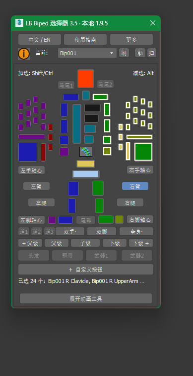
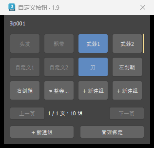

基于 LB Biped Helper 3.5 · Zhuoyu 本地版 1.9.9 · 2026-11-14LB Biped 选择器使用指南
从选择控制骨骼到关键帧与 IK 操作。常用功能留在选择器，设置和日志放在「更多」。
1. 开始使用
- 把
Zhuoyu_BipedTools_1.9.9.mzp 拖入 Max 视口，或用「脚本 → 运行脚本」安装。直接从 GitHub Release 下载 MZP。安装后打开带 Biped 的场景，选择器可从 Zhuoyu Biped 宏分类启动。 - 在「当前」下拉框选需要操作的 Biped。左右方向按角色自身。
- 点击身体部件或下方控制骨骼组开始选择。需要编辑动画时，展开「动画工具」。
把选择器按钮放到工具栏
- 打开 Customize → Customize User Interface…（自定义 → 自定义用户界面），切换到 Toolbars 标签。
- 左侧 Group 选
Main UI，Category 选 Zhuoyu Biped。在下面的 Action 列表找到 LB Biped 选择器。旧版可能显示「Biped 选择器：中文 / English」。 - 右侧点击 New…，输入
Zhuoyu 并确定，Max 会出现一条很小的空白浮动工具栏，左侧带拖动手柄。若它挡在自定义窗口上，先用手柄把它移到视口空白处。 - 按住左键，把 Action 列表里的选择器命令拖到这条浮动工具栏内，再松开。工具栏里出现人形图标就表示添加成功。本版显示蓝绿人形图标，安装时自动刷新图标缓存。拖的是命令这一行，不是 Category 分类名，也不是选择器窗口。
- 关闭自定义窗口，点击新按钮确认能打开选择器。要放到顶部，再拖动新工具栏的标题或把手到顶部停靠区域。
顶部的一整片灰色空白可能是停靠区域，并非可直接接收命令的工具栏。先新建工具栏再拖命令，更容易确定落点。若要加到现有工具栏，应拖到它的按钮之间或末端，看到可插入标记后再松开；需要停靠而拖不动时，先关闭 Customize 菜单中的 Lock UI Layout（锁定界面布局）。
不使用工具栏时，可以通过「脚本 → 运行脚本」运行本机用户脚本目录中的 ZhuoyuBipedTools/ZYBiped_Launcher.ms。本安装包不强制新增工具栏或占用新的界面行。
这是一套 MAXScript 安装包：包含汉化 LB 选择器、完整助手和选择组功能。安装时使用接收安装包的当前 Max 用户目录，插件、图片和本网页一同安装。本包面向 Windows 64 位 Max 2020–2027；本版以 Max 2020 为主要验证环境；具体通过项目见交付说明。其他年份未逐一实机验收；本包不适用于 Max 2014。只需分发一个 MZP，不需要另外复制指南；「使用指南」会从本机安装位置打开本页。
| 顶部入口 | 用途 |
|---|
| 中文 / EN | 切换 LB 界面语言，记住选择并保留参数。 |
| 使用指南 | 打开本页。 |
| 更多 | 完整助手、选择组设置和日志。 |
| 刷 / 助 / 归 | 重新搜索 Biped / 打开完整助手 / 关闭助手并重置其位置。 |

布局示意截图来自 1.9.5；1.9.8 保持相同布局，安装后的窗口标题显示 1.9.8。
2. 身体选择
| 操作 | 结果 |
|---|
| 单击 | 改选该部件或该组。 |
| Shift 或 Ctrl + 单击 | 加入当前选择。 |
| Alt + 单击 | 从当前选择中移除。 |
| 全身 | 自动识别时选择当前角色的标准 Biped 部件；额外武器、飘带和面部控制器可用自定义组，也可手动重绑定该按钮。 |
| + 父级 / 父级 | 加选当前 Biped 内的父级 / 改选该父级；不会选到外部父控制器。 |
| 子级 / 下级 / 下级 + | 加选所有 Biped 后代 / 改选直接 Biped 子级 / 加选直接 Biped 子级。 |
- 浅黄实线描边表示该按钮对应的节点已全部选中，单个部件也用此描边。
- 橙色虚线描边表示这个组合只有部分节点选中。
- 暗灰色表示当前没有有效选择目标。有当前 Biped 时，仍可右键单击或左键双击该内置按钮，打开绑定窗口。
加选保留已有描边，减选移除相应描边。3D视口直接选择也同步。文字组合按钮只有全部选中时才激活；部分选中时带「·」，不使用全选底色。
蓝色是左侧四肢，绿色是右侧四肢；中间橙色为头，青色为颈与脊柱，浅蓝色为根 COM。手指、脚趾可点单节，也可用整手、整脚或整条肢体按钮。
自动模式下，「马尾1 / 马尾2」只对应标准 Biped 两个马尾根；「道1 / 道2 / 道3」对应 Prop1 / Prop2 / Prop3 道具节点。缺少部件时按钮灰显。
自动模式下，角色没有的脊柱节、标准马尾或 Prop 会灰显；这表示没有识别到目标。若要让这个按钮选择当前角色的其他控制器，可按下节手动绑定；需要新增独立按钮时用「+ 自定义按钮」。
身体和快捷组的纯选择操作在运动面板开启时切到修改面板，减少 Biped 面板刷新造成的停顿。需要查看 Biped Key Info 时再打开运动面板；它不会改动动画。
「手 / 脚轴心」打开 Biped 固定或滑动 IK 的接触轴心选择，例如脚尖、脚跟；它不会修改模型的枢轴。
2.1 内置色块：重绑定与结果确认
身体、手指、脚趾、马尾、道具和整肢按钮均可修改选择目标，包括已有自动目标的色块和暂无目标的灰色色块。
| 操作 | 结果 |
|---|
| 左键单击 | 立即选择当前绑定目标；Shift / Ctrl 加选，Alt 减选。 |
| 右键单击 | 打开“控制器绑定”，保留预先选好的骨骼。右键只需一次。 |
| 左键双击 | 打开同一窗口，恢复第一次点击前的视口选择。与第一次点击逐次对应，不因重场景处理超过固定时限而丢失预选。 |
| 鼠标悬停 | 查看自动 / 手动绑定、有效目标数、已选数和真实节点名称。 |
推荐：先选好一个或多个骨骼，再绑定
- 在选择器顶部确认当前 Biped。在视口选择需要的骨骼；支持一次多选。
- 右键单击或左键双击需要修改的色块，核对窗口标题与角色名。
- 点窗口顶部“载入视口选择：N 个”。未选择对象时，按钮显示“载入视口选择（支持多选）”。
- 检查“待应用：手动绑定 · N 个控制器”和完整节点列表。此时仅准备修改；可点“在视口查看列表目标”确认位置。
- 点“应用绑定”。窗口继续显示“已绑定 N 个控制器”，并在视口选中新目标、刷新色块描边；应用按钮变灰，表示没有尚未提交的修改。
- 确认结果后关闭小窗口，保存 .max 场景。绑定才会随场景保留到下次打开。
| 窗口控件 | 作用 |
|---|
| 载入视口选择（支持多选） | 将当前视口选择整体载入待绑定列表。可一次载入多个有效控制器；空选择只提示，不清空旧列表。 |
| 拾取单个控制器 | 进入 Max 原生拾取模式，用拾取的一个控制器替换待绑定列表；视口右键取消拾取，原列表和已保存绑定保持不变。多选请用顶部“载入视口选择”。 |
| 在视口查看列表目标 | 选中列表中的目标，便于核对。只作选择预览，不保存待应用的修改。 |
| 恢复自动识别 | 列出自动目标并进入待应用状态；点“应用绑定”才移除手动覆盖。不改变骨骼姿势。 |
| 清空绑定 | 准备一个手动空绑定；应用后色块灰显，不自动退回自动目标。 |
| 应用绑定 | 保存当前按钮的修改，并选中实际绑定结果。窗口保留成功消息和节点列表，便于立即确认。 |
| 关闭 / 窗口关闭按钮 | 关闭编辑器，放弃未应用的草稿。已经应用的修改保留；可用 Max 的 Ctrl+Z 撤销。 |
每个按钮独立保存。修改“右食指 1”不会改写“右臂”“双手”“全身”等其他按钮；组合按钮需要分别绑定。此处不改色块名称或颜色；需要自定名称时使用自定义组。
- 只接受当前角色的有效骨骼、辅助体或形状控制器。选择混有网格或其他角色节点时会提示拒绝，原列表保持不变；请核对当前角色后重新选择。
- 切换 Biped 后，旧绑定窗口的操作会停用；请在目标角色上重新打开。
- 节点引用随场景保存。改名不丢绑定；删除后新建同名节点不会自动顶替，需要重新绑定。
- 没有待应用草稿时，窗口中的绑定列表会跟随撤销 / 重做同步。
- 重绑定只改变按钮选择目标，不改骨架父子关系、蒙皮、姿势、动画控制器或关键帧。
2.2 版本 1.9.8：修复选择绑定阻碍层级编辑
旧版本把按钮对应的骨骼直接记录在场景根节点上。在部分工程中，这会让 Max 在 Link / Unlink 时误入循环依赖检查，出现 Cannot link: would create dependency loop。1.9.8 改用不形成这种依赖的对象记录方式；涉及自定义组、内置色块的手动绑定、组目录及删除保护记录。
这里的“绑定”只是“点击按钮选中谁”，不是 Skin 蒙皮、父子链接或 Link Constraint。升级只转换本插件的选择记录，不会重绑蒙皮、替换动画控制器、改父级或烘焙关键帧。
已有工程怎么升级
- 先保存一个工程副本，并关闭本插件的脚本编辑标签。安装
Zhuoyu_BipedTools_1.9.9.mzp；选择器标题应显示 1.9.9。 - 新版安装到当前会话，或下次打开旧工程时，会自动转换旧选择记录。按钮名称、顺序、多选目标和手动清空状态会保留，不需要重新逐个绑定。
- 点“武器1 / 武器2”和使用过的自定义按钮，确认选中的骨骼正确。在副本中检查需要的 Link / Unlink 操作。
- 用“另存为”保存升级后的副本，再重新打开核对。插件不会替你保存或覆盖任何工程文件。
升级后的选择记录需要 1.9.8 或更新版读取。请让协作者同步升级；如果要继续使用旧插件，保留升级前的工程副本。新版仍能打开旧工程，但不保证旧插件能识别新版记录。
不需要为这次修复清空绑定。若仍出现循环依赖，应检查该节点的真实父子关系、约束或其他插件记录；新版不会强行解除合法的依赖保护。Link Constraint 在切换帧重新计算参考位置造成的轨迹偏移，是另一个问题，本次修复不改变其计算方式。
保留的近期功能
- 内置色块右键 / 双击打开绑定窗口；支持载入多个控制器、预览、应用、恢复自动和清空。应用后显示实际目标与视口选择结果。
- 按真实手指链识别各节；自定义按钮支持新增、改名、分页与拖动排序。
- 保留已修复的原生事件入口和 ESC 取消处理，不添加常驻的场景轮询。
验证范围与未覆盖的 Max 年份应以该版本交付说明为准。兼容标识不是对所有骨架、约束组合和第三方插件的无故障保证。
3. 自定义按钮与角色控制器绑定
本节截图为此前版本的操作示意；分组和绑定流程仍可按图操作。
主窗和按钮窗均由 Max 原生深色提示显示完整信息，包括绑定状态、有效控制器数、失效数、已选数、控制器名称与操作说明。灰色空组仍可点击配置或拖动排序。
点击主选择器武器按钮下方的 「+ 自定义按钮」 展开按钮窗，再点一次收起。窗口可以自由拖动，原有头发、飘带、武器1/2快捷入口仍在。自定义1/2与新增组全部有可点击的入口。
 每页 4 列 × 3 行。空位显示「+ 新建组」，不会假装已经绑定。
每页 4 列 × 3 行。空位显示「+ 新建组」，不会假装已经绑定。
主窗和按钮窗的悬浮提示一致：完整组名、绑定状态和控制器数量都在悬停时查看；武器1/2也适用。未绑定组保持灰色，点击仍可进入配置。
完整例子：刀、左剑鞘、右剑鞘与整套武器
- 在选择器顶部「当前」选择正确的 Biped。点击「+ 自定义按钮」→「+ 新建组」，打开绑定窗口。
- 在「名称」输入 刀，点 「新建组」。当前编辑组变成刀；此时还是空组。
- 从下表三种来源选一种绑定。例如先在视口选刀的动画控制器，再点 「使用视口所选（多个）」；只选一个也适用。节点列表应显示实际控制器名。
- 把「名称」改为 左剑鞘，点「新建组」，绑定左剑鞘控制器。再同样建立 右剑鞘。请用「新建组」创建另一个按钮；「保存改名」只修改当前组的名称。
- 新建 整套武器。在视口同时选刀、左剑鞘和右剑鞘的全部控制器，点「使用视口所选（多个）」。本组记录多个节点，点击一个按钮即可整套选中。一个控制器允许被多个组复用。
- 保存 .max 工程。新建、改名、删除、排序和绑定都要保存工程后才能在下次打开时保留。工具显示「已绑定」只说明本次场景配置改变，不等于工程已经保存。
三种绑定来源：都覆盖当前组
| 按钮 | 操作 |
|---|
| 使用列表候选（一个） | 在候选列表选一项，查看依据，用「在视口预览候选」核对，最后绑定该一个控制器。组可叫刀或任意名称，候选不要求组叫 Weapon。 |
| 到视口拾取一个 | 先点此按钮，再到视口点一个动画控制器，覆盖当前组。 |
| 使用视口所选（多个） | 使用视口已经选中的一个或多个控制器，覆盖当前组并去重。空选择会提示，原绑定保留。 |
三种方式均覆盖，不能暗中追加。需要在原组增加节点时，先把原节点和新节点一起选好，再用视口所选覆盖。绑定只记录选择关系，不改变父子关系、约束或关键帧。网格不能直接作为动画控制器；「查所选网格的 Skin」可以辅助选出实际蒙皮骨骼，核对后再绑定。
选择、编辑与状态
- 已绑定组左键选中；空组点击配置；右键编辑。Shift / Ctrl 加选，Alt 减选。直接在视口改选也会更新按钮。
- 按钮只显示名称，控制器数量放在悬浮提示里。未绑定组为 Max 灰色，仍可点击设置、拖动排序；有名字不代表已绑定。已绑定组为正常亮度，只有有效控制器真正全部选中才显示蓝色高亮；名称前的小半圆「◐」表示部分选中。悬停或按下不会把未绑定组变成选中高亮。失效组带「!」提示：全部失效时置灰，点击修复；部分失效时仍可选择有效控制器，右键检查绑定。主窗四个常用入口与浮窗使用相同状态。
- 悬停显示完整组名、实际控制器名称、有效 / 失效数量和操作。长名称只在按钮上缩短，不修改真实名称。
- 改名：选编辑组，修改名称，点「保存改名」，绑定保持不变。清空：点「清空绑定」，保留组。删除：点「删除组」，只删组配置，场景节点保留。Ctrl+Z 可撤销这些配置修改。
- 头发、飘带和武器1/2的主窗快捷入口长期保留；删除其组配置后，再点对应主窗入口会恢复一个空组，等你重新设置。
翻页、拖动与收起
每页最多十二组，第13组进入第2页，第25组进入第3页。用下方「上一页 / 下一页」翻页；页数随实际组数变化，删除末页最后一组后自动回到有效页码。新组默认放在末尾，改名不改变顺序。
拖动按钮排序

金色竖线表示松开后的插入位置；灰色未绑定组也可以排序。- 按住已有组按钮的左键，拖到目标位置。出现的金色竖线表示插入位置；松开后其他组依次让位，组的绑定保持不变。灰色未绑定组也可以拖动；「+ 新建组」空位不能拖动，拖到空位会将组放在末尾。
- 跨页移动：拖动中悬停在「上一页 / 下一页」约半秒，窗口会翻页，继续拖到目标插入位置再松开。
- 按 Esc，或移到窗口外松开，取消本次拖动。轻微移动仍按普通点击处理；完成拖动不会同时选择场景控制器。
- Ctrl+Z 撤销排序。排序按当前角色保存，保存 .max 后下次打开仍保留。主窗头发、飘带、武器1/2四个固定入口的位置保持固定，浮窗中的对应组可以排序。
拖动按钮窗标题栏即可自由移动。再次点主窗「+ 自定义按钮」收起，重新展开保留位置和页码。选择器关闭时子窗一起关闭，重开或语言切换后不会残留重复窗口。
失效、候选与旧版兼容
1.6 的六组绑定及姿势部件保留。节点使用本工程和实际 Biped 根隔离，以真实节点引用保存；组名不参与节点查找。节点改名不丢绑定；删掉原节点再建同名节点不会顶替绑定。节点转属其他角色或跨角色约束会失效。部分失效时有效节点仍能选，右键重新覆盖绑定即可修复。删除父控制器时，受影响的子链也会暂列为失效，避免读取 Max 尚未修复的父级引用；撤销删除，或明确重新链接子控制器后，再核对绑定。切换角色后先核对窗口顶部角色名。
候选来自武器名称线索、Skin、层级和约束证据。「刷新候选」更新列表。候选不会自动绑定到武器1或任何组；即使只有一个明确候选，按钮在用户确认绑定前也保持灰色。先预览核对，再点「使用列表候选（一个）」完成绑定；候选预览本身不会激活组按钮。没有候选不影响直接拾取或使用视口所选。没有任何角色预设，不自动沿用旧版全局名字 INI。
道具按钮：自动识别与手动绑定
在自动识别模式下，这三个按钮对应 Biped 自带的道具部件，使用 biped.getNode root #prop1 / #prop2 / #prop3 查询实际部件。角色没有该部件时按钮灰显。把普通节点改名 Prop1 不会改变自动识别。可右键该按钮手动绑定当前角色的控制器，或用自定义组另建刀、剑鞘等按钮。重绑定只改变选择目标，不会把普通节点转换成原生 Biped Prop。
4. 动画工具：场景、步骤与图标
点击「展开动画工具」显示下面这些行。顶部「时间轴 / 自定」准备批量操作的范围，始 / 末 / 步是开始帧、结束帧和采样间隔。它不会执行操作，也不会让所有按钮自动按范围工作。
修改姿势时使用 Auto Key 或 Biped Set Key 记录结果。「全身补帧 / 所选补帧」给已有轨道值加关键帧，不能把它当成通用的新姿势提交按钮。
| 设置 | 含义 | 配合哪些操作 |
|---|
| 时间轴 | 读取Max动画开始与结束的整段范围，如0～60，不是当前滑块帧。 | 范围补帧、范围删帧、世界TM烘焙及各自明确支持范围的工具。 |
| 自定：始/末/步 | 设置工具子范围，不改变Max时间轴。步1采样0、1、2…，步5采样0、5、10…。 |
| 补帧的当前帧/按范围 | 右键明确选择；普通左键只补当前帧，Shift/Ctrl左键按范围。 | 两个补帧按钮。例：滑块在17而填0～50，普通点仍只补17。 |
| 脚部自己的当前/逐帧/全部键/选中键 | 决定脚部清理怎样采样，这里的当前才是当前帧。 | 脚方向校正与脚底贴地。 |
| 间隔删帧N | 按绝对帧号保留N的倍数，忽略顶部步长。 | 间隔删帧按钮。 |
步长从起点递增，不能整除时不额外采样终点，例如0～50步3采样到48。IK接触、缓存和快照有各自触发规则，按下面对应场景操作。
给左手的 0～50 帧补键
用途与场景：把已有动作在指定时刻的值记成键，方便逐帧清理或后续编辑。补帧改变键的密度；记录新摆出的姿势用 Auto Key 或运动面板里的 Biped Set Key。
- 顶部「当前」选对 Biped，点击左手方块。浅黄描边和状态行中的
Bip001 L Hand 表示选中了左手。退出形体模式。 - 展开动画工具，选「自定」，填「始 0、末 50、步 1」。这里只准备范围，尚未执行。
- 右键第二个圆形图标「所选补帧」→ 按范围补帧。也可以按 Shift/Ctrl 左键点击。普通左键只补时间滑块所在的当前帧，即使已经填了 0～50。
- 状态行应显示「补帧完成：1 部件 × 51 时刻」。打开 Track View → Dope Sheet（轨迹视图 → 摄影表），查看左手对应的 Biped 轨道，0～50 每个整数帧都应有键。已有时刻的键不重复新增，所以不一定增加51个键。
- 播放动作，外观通常不变，这是预期结果。Ctrl+Z 撤销此次补帧。
没反应时：先读结果行，按提示处理未选择、形体模式或选错对象。若显示完成却键数不增加，检查这些帧是否本来有键。自定义普通武器骨骼，不支持 Biped 补帧按钮。
第一枚「全身补帧」无需选择部件，处理当前 Biped 的根三轨、骨盆、脊柱、头、双手双脚及存在的尾根等主要轨道，不会烘焙所有自定义控制器。
原作者按钮规则：Biped Helper · Keys；API：Autodesk Biped Keys。
① 关键帧行（从左到右） · 图标索引
| 图标 / 功能 | 操作与前提 |
|---|
| 全身补帧 | 给当前 Biped 各主要轨道的已有值补帧。单击仅当前帧；Shift/Ctrl 按范围；右键选择模式。
不会提交刚改的新姿势；改姿势请开 Auto Key 或用运动面板 Set Key。
用法：整理主要Biped轨道；右键明确选择当前/范围，检查结果行。 |
| 所选补帧 | 给所选 Biped 轨道的已有值补帧。单击仅当前帧；Shift/Ctrl 按范围；右键选择模式。
不会提交刚改的新姿势；改姿势请开 Auto Key 或用运动面板 Set Key。
用法：只增加已选Biped部件的键密度，按上面的左手实例检查。 |
| 清空全身动画 | 清空当前 Biped 所有动画关键帧；会要求确认。
用法：准备重做整套动作时清空当前角色，先另存工程。 |
| 删除当前帧 | 删除所选 Biped 当前帧的 key；Shift/Ctrl 对全身生效。
用法：删一个错误键。普通点击所选，Shift/Ctrl对全身。 |
| 删除范围帧 | 删除所选 Biped 范围内的 key；Shift/Ctrl 对全身生效。
用法：移除需要重做的片段。普通点击已经按范围，Shift/Ctrl改为全身。 |
| 间隔删帧 | 按间隔保留 key 并删除中间帧；Shift/Ctrl 对全身生效。
用法：键太密时减键：按绝对帧号保留N的倍数，忽略顶部步长。减键可能改变动作。 |
| 保留间隔 N | 间隔删帧时每 N 帧保留一个 key。
用法：仅配合间隔删帧，N=5保留0、5、10…已有键，不新增缺失键。 |
| 应用上次变换增量 | 将最近一次变换增量应用到所选 Biped 的选中 key。
用法：先在轨迹栏选择多个键，做一次变换，再把增量应用到其余选中键。 |
让脚支撑身体，或让手沿桌面滑动
用途：固定Planted用于支撑接触；滑动Sliding用于接触点移动；自由Free用于挥手、摆腿等脱离支撑的动作。
- 选择 Biped 手掌或脚部，停在接触帧，点击对应固定 / 滑动 / 自由图标。这些按钮作用于当前时刻，不会因顶部选「自定」自动遍历整段。
- 脚跟着地或踮脚时，先设固定/滑动键，再开「脚轴心」选脚跟或脚尖。
- 查看运动面板 Key Info 并播放相邻帧确认接触。一个固定键不会自动修好整段滑步，接触开始和结束都要有合理的键。
无效原因：选了网格、根或普通骨骼；当前帧没有适用的IK键；改了时间后轴心小窗仍显示旧状态。批量空间转换见完整助手扩展。
接触状态参数：Autodesk Biped Key Info。
② IK 接触与显示行 · 图标索引
| 图标 / 功能 | 操作与前提 |
|---|
| 固定 IK 帧 | 为所选 Biped 四肢设置固定 IK key；用于手脚保持接触点。 |
| 滑动 IK 帧 | 为所选 Biped 四肢设置滑动 IK key；允许接触点滑动。 |
| 自由帧 | 为所选 Biped 四肢设置自由 key；用于离地或解除固定。 |
| Max 原生 Biped 轨迹 | 切换所选 Biped 的 Max 原生轨迹显示。
用法：观察已选Biped部件的原生紫色轨迹，显示开关不写动画。 |
| 方块显示 | 全部 Biped 改为方块显示；Shift 恢复正常显示。 |
| 隐藏 Biped | 隐藏当前 Biped 的全部部件。 |
| 显示 Biped | 显示当前 Biped；末端、扭转与脚步节点仍不显示。 |
让手保持一个世界位置或朝向
场景：清理动捕时固定手、脚或道具。世界变换TM缓存描述某个时刻的位置和旋转，不是一整段运动。
- 停在正确接触帧，只选一个来源对象，点复制世界变换，确认缓存指示可用。
- 选目标。只锁高度勾位置Z；锁位置勾X/Y/Z；还要锁朝向则勾旋转XYZ。
- 粘贴仅应用当前帧；需要整段固定时先设置范围和步长，再烘焙，把同一个缓存变换写到多个时刻。
预期与排查：目标所勾轴匹配缓存。未复制、未选目标或所有轴都关闭时没有效果。要跟随移动平台保持相对位置，应使用对应约束或空间方案；世界TM缓存固定的是世界变换。
③ 世界变换行 · 图标索引
| 图标 / 功能 | 操作与前提 |
|---|
| 复制世界变换 | 复制一个所选对象的世界位置与旋转。 |
| 复制缓存指示 | 橙色表示已经复制了变换。
用法：仅指示缓存是否存在，不是再次复制按钮。 |
| 应用位置 X | 粘贴或烘焙时应用世界 X 位置。
用法：锁定世界X位置，配合粘贴/烘焙。 |
| 应用位置 Y | 粘贴或烘焙时应用世界 Y 位置。
用法：锁定世界Y位置，配合粘贴/烘焙。 |
| 应用位置 Z | 粘贴或烘焙时应用世界 Z 位置。
用法：只修高度时保留Z，关闭X/Y。 |
| 应用全部旋转 | 粘贴或烘焙时应用全部旋转轴。
用法：应用缓存的整组旋转，不是逐个旋转轴控制。 |
| 粘贴世界变换 | 向所选对象粘贴已复制的世界变换；先复制并选择轴。 |
| 烘焙世界变换 | 将已复制的世界变换按开始、结束与步长烘焙到所选对象。 |
④ 脚部清理行 · 图标索引
| 图标 / 功能 | 操作与前提 |
|---|
| 校正俯仰 / 侧倾 / 朝向 | 选择 Biped 脚，按俯仰/侧倾/朝向校正。俯仰和侧倾对齐世界 XY 平面；朝向以当前帧为准。 |
| 脚底贴到 Z=0 | 将所选 Biped 脚的底面移动到地平面。 |
| F F：只处理 Z=0 以下的脚底 | 只在脚底低于地平面时执行贴地。 |
用残影判断动作间距和弧线
场景：比较挥刀、摆臂的运动间距。选Biped部件→开残影→选之前/之后/前后。T控制参考帧数，N控制采样间隔，N大时显示更稀疏。
预期：视口出现多个时刻的参考形状。W切线框减少遮挡，F显示帧号。残影不写动画键；看不到时先检查选择、开关与视口遮挡。
⑤ 残影行 · 图标索引
| 图标 / 功能 | 操作与前提 |
|---|
| 残影开关 | 切换所选 Biped 的残影显示。 |
| T T：残影总帧数 | 残影显示的帧数。 |
| N N：每隔 N 帧显示 | 每 N 帧显示一份残影。 |
| W W：线框残影 | 将残影以线框显示。 |
| F F：显示帧号 | 显示残影帧号。 |
留住一个姿势，与修改后比较
- 选Biped部件，停在来源帧，点缓存当前姿势，再开显示、调不透明度。
- 修改后点互换缓存姿势比较前后；勾「互换时打帧」会记录结果。
- 再次缓存覆盖旧槽，删除清理缓存。
预期与排查：创建缓存后参考可见，互换可用。没有缓存时调透明度或开显示不会产生姿势。缓存不能替代保存Max工程。
⑥ 姿势缓存行 · 图标索引
| 图标 / 功能 | 操作与前提 |
|---|
| 显示姿势缓存 | 切换已有姿势缓存网格的显示。 |
| 缓存当前姿势 | 在当前帧为当前 Biped 创建姿势缓存；需要蒙皮网格。 |
| 互换缓存姿势 | 当前姿势与已有缓存互换，并留下新的缓存网格。 |
| 打帧 互换时打帧 | 互换缓存姿势时在当前帧打帧；即使 Auto Key 关闭也会打帧。 |
| 删除姿势缓存 | 移除已有姿势缓存网格。 |
| 不透明度: 缓存不透明度 | 调整姿势缓存网格不透明度。 |
| < 恢复默认不透明度 | 恢复缓存的默认不透明度。 |
留下某一帧的蒙皮模型轮廓
- 把待参考网格放入一个场景对象图层，输入准确图层名。
- 停在目标帧点生成快照，换帧再次生成可保留多个时刻的外形。
- 用显示开关、不透明度比较，完成后删除快照。
预期与排查：生成静态几何副本，原网格动画继续播放。图层不存在或没有可快照几何体时没有模型。这里是Layer Explorer对象图层，不是Biped动画层。
⑦ 几何快照行 · 图标索引
| 图标 / 功能 | 操作与前提 |
|---|
| 显示几何快照 | 切换已有快照图层的显示。 |
| 快照来源图层 | 输入待生成快照的蒙皮网格图层名；须与场景原名一致。 |
| 生成当前帧快照 | 为指定图层中的蒙皮网格生成当前帧合并快照。 |
| 删除全部快照 | 删除快照图层及其中全部快照。
用法：清理生成的静态参考副本。 |
| 不透明度: 快照不透明度 | 调整已有快照的不透明度。 |
| < 恢复默认不透明度 | 恢复快照默认不透明度。 |
观察脚尖等局部接触点的路线
- 点击添加辅助点，拾取Biped部件，再在其表面点击放参考点。
- 开显示；路径不见时检查运动面板Motion Paths可见性设置。
- 需要截短显示时启用T并填S/E，删除清理本工具的辅助点。
预期：观察参考点的路线。S/E裁剪显示，不裁剪角色动画；没放辅助点时开显示不会生成路径。这个功能源于 LB 工具箱的轨迹辅助点。1.9.9 用 Max 的原生表面拾取重做了放点，取消时不会留下节点。
⑧ 原生轨迹辅助行 · 图标索引
| 图标 / 功能 | 操作与前提 |
|---|
| 显示原生轨迹辅助 | 切换已有 Biped 轨迹辅助对象的显示。 |
| 拾取添加辅助点 | 点击后在 Biped 表面拾取位置，添加原生轨迹辅助对象。 |
| 删除全部辅助点 | 删除全部 Biped 轨迹辅助对象及其图层。
用法：清理本工具创建的路径辅助点。 |
| 始 S：裁剪开始帧 | 原生轨迹裁剪的开始帧。 |
| 末 E：裁剪结束帧 | 原生轨迹裁剪的结束帧。 |
| T T：启用轨迹裁剪 | 按开始与结束值裁剪原生轨迹显示。 |
脚部范围中的「当前帧」只处理当前时刻；「逐帧」遍历范围内每帧；「全部键」只处理已有关键帧；「选中键」只处理已选关键帧。俯仰和侧倾对齐世界 XY 平面；朝向以当前帧为基准。「脚底贴到 Z=0」使用世界 Z=0 平面，不会自动识别场景中的地形模型。
残影的 < / > / <> 分别显示之前、之后、前后。红色禁止图案通常表示关闭或暂不可用。「原生 Biped 轨迹」和最后一行「原生轨迹辅助」属于 LB 原功能；添加辅助点的操作见本节说明。
5. 原工具箱补充操作说明
本节参考 Lorne Brooks 的 Biped Helper + Picker 3.5 原版指南，只补充前面尚未说明的操作。身体选择、头发武器组和动画工具图标分别见第 2、3、4 节。
完整助手的入口是选择器顶部「助」，或「更多 → 完整 Biped 助手」。它是原工具的另一套操作面板，不是纯文字版说明书。
| 完整助手内容 | 关系 / 使用时机 |
|---|
| 选择、显示、时间、补帧删帧、世界变换、参考 | 大部分与选择器共用功能及参数，直接按第4节操作，不必重复做一遍。喜欢展开的文字排版时可用助手。 |
| TCB、四肢空间、镜像、动画层、BIP、对齐烘焙 | 专业参数和扩展工作流。明确要调插值、接触空间、叠加动画或转换驱动时打开，按下方补充操作。 |
5.1 手脚接触轴心：怎么选
用途：决定手脚以哪个接触点作为 IK 支撑，例如脚跟着地、脚尖踮起或手掌支撑。
- 把时间滑块移到手 / 脚已有固定或滑动 IK 键的帧。自由帧不能使用接触轴心。
- 点选择器的「手 / 脚轴心」，或完整助手中相应的 P。
- 在小窗口中点需要的接触位置。手部按掌、腕和手指关节区分；脚部按脚跟、脚掌和脚尖区分。左右窗口用法相同。
改了关键帧或时间后，刷新或重新打开轴心窗口，避免界面仍显示旧状态。此操作改变 IK 接触点，不修改模型枢轴。
5.2 TCB：调整关键姿势之间的过渡
场景：关键姿势已经正确，但经过姿势的节奏太软或衔接不理想，才调整插值。它不是移动关键帧或重新摆姿势。
入口：更多 → 完整 Biped 助手 → 关键帧 → TCB 插值设置。
- 选中 Biped 部件，停在已有关键帧，选择要调整的「张力 / 连续性 / 偏置」。张力影响曲线的绷紧程度，连续性影响进出键的切线衔接，偏置影响对前后段的倾向。
- 输入数值后点「应用」，或直接点下方数值按钮。选中根 COM 时，用「横 / 竖 / 转」限定要修改的根轨道。
- 按 Shift / Ctrl 应用于时间范围内已有键。不同 TCB 参数含义不同，不能一概把数值 0 当成线性。
新手试法：另存动作→选手并停在已有键→只选张力、记下原值→小幅改值→播放前后比较。没有对应键时不会新建键；COM须勾对横/竖/转轨道。T/C/B含义不同，不要一次全改，也不要把0一概当成线性。
概念：Autodesk TCB Controllers。
时间范围输入框下的小条可读取当前帧；Shift + 点击可跳到该值。「间隔删帧」按绝对帧号保留 N 的倍数：例如 N=5 保留 0、5、10…，删除范围内其他键；不是每数到第 N 个现有键才保留。
5.3 四肢空间：单帧设置与批量转换
入口：完整助手 → 四肢空间。固定 / 滑动 / 自由 IK 的图标已在第 4 节说明；这里补充完整助手的操作范围。
- 上面的左 / 右 / 双臂、双腿按钮直接指定肢体，无需先选择。对象空间按钮在当前帧设置滑动键；Shift + 点击改为固定键。身体空间按钮设置自由键。
- 底部「所选：对象 / 身体空间」转换所选四肢的全部现有关键帧，作用范围与上面的单帧按钮不同。
- 「暂存空间状态」记录各键原来的自由 / 滑动 / 固定状态，再统一转为自由键；「恢复空间状态」按关键帧索引还原。两次操作之间保持关键帧数量与顺序一致；缓存只在本次会话内有效。
5.4 复制姿势、镜像与伸直
入口：完整助手 → 姿势 / 部分姿势。
- 在来源帧点「复制全身姿势」；只复制部分身体时，先选 Biped 部件，再点「复制局部姿势」。两种复制各有一个槽，再次复制会覆盖旧内容。
- 移到目标帧，检查「粘贴到对侧四肢」、根轨道「横 / 竖 / 转」和 TCB / IK 模式，再点对应粘贴按钮。局部粘贴会找回对应部件；「选」可重新选中复制时的部件。
- 普通粘贴在当前帧写键；Shift / Ctrl + 粘贴按指定范围与步长写键。TCB / IK「默认」取默认参数，「复制值」沿用来源数据，「插值」依据目标原动画。「保留根运动速度」需要目标帧之前的根运动作参考。
镜像箭头表示来源 → 目标，例如「左→右臂」将左臂姿势镜像到右臂，包含手指；腿部包含脚趾。手指「伸直」默认处理所选手指末两节，Shift / Ctrl 处理整条手指；脊柱的「伸直」与「消除扭转」用于整理脊柱姿势。
5.5 动画层与 IK 重定向
入口：完整助手 → 图层。这里操作 Biped 动画层；几何快照使用的是场景对象图层。
- 用下拉框或「切到上层 / 下层」切换当前层。外部改层或撤销后点 R 刷新。
- 「当前」启停当前层；「独显」保留当前层与基础层的效果；「全部启用 / 停用」控制叠加层。基础层 0 始终启用。
- 输入名称后添加或重命名。「删除」移除当前叠加层及其动画；「合并」把当前层合入紧邻下层，当前层及以下层须启用。
- 选一个 Biped 部件，点「吸附并打帧」，在当前层写入回到基础层运动的键。
- 需要保持跨层的手脚接触时，打开「IK 重定向」，选基础层或拾取另一个 Biped 作参考，勾选四肢后点「更新」；「仅 IK」只处理 IK 控制的键。
5.6 BIP 动画文件
入口：完整助手 → 载入 / 保存。先确认顶部当前 Biped。
需要命名、保留多版动作时，使用「载入 / 保存对话框」。快速保存覆盖本工具的单个 BIP 槽，快速载入从该槽恢复。BIP 保存 Biped 动画，不能代替整个 Max 工程，也不包含全部自定义武器控制器的动画。
5.7 对齐与烘焙：什么时候用
入口：完整助手 → 对齐与烘焙。
- 偏移对齐：把一段根运动整体换位置、朝向，保留原来的运动形状。停在参考时刻，点按钮并拾取目标；处理范围内已有根键。匹配对齐则让已有根键匹配目标在对应时刻的世界变换。
- 动画烘焙：把父级 / 绑定 / 注视目标驱动的运动写成 Biped 关键帧。先设置好驱动关系，再选择「根节点 / 全部四肢 / 根与四肢 / 指定四肢」或头部模式，点击「烘焙动画关键帧」。根烘焙会解除父级链接；头部烘焙会解除注视目标引用，不删除目标节点。
- 滑动键区间：选一个手或脚，停在要开始检查的时刻，再选「到下一个 / 最后一个滑动帧」。起始找到的键与相邻键需满足滑动条件，脚本在连续滑动键之间补帧。
- Biped 道具对齐：选标准 Prop1 / 2 / 3 → 拾取目标 → 对齐到目标。默认在当前帧写键，勾选烘焙后按范围处理。自定义普通武器骨骼不属于这些标准 Prop 槽。
烘焙前另存工程，用于保留驱动关系。范围按模式确认：头部、道具和普通父级根烘焙读取工具指定范围；四肢滑动键和根的链接约束分支会读取 Max 当前动画范围。
6. 常见术语：它影响什么
| 术语 | 解释与场景 |
|---|
| 关键帧Key / 补帧 | 键保存某时刻的动画值，控制器计算键之间的值。此处补帧增加采样键，记录新姿势用Auto Key或Biped Set Key。 |
| 控制器Controller / 轨道Track | 控制器计算动画，轨道是可编辑通道。同一Biped肢体的键组织不一定与每根场景骨骼独立对应。 |
| 插值Interpolation | 关键帧之间怎样运动。减键、改TCB可能改变中间的运动曲线。 |
| TCB：张力T / 连续性C / 偏置B | T影响曲线靠近键时的弯曲，C影响进出键的衔接，B偏向前一段或后一段。用于调过渡形状，数字不是百分比，也不是越大越好。Biped此处使用0～50，通用TCB控制器数值范围可能不同。 |
| COM：Center of Mass | Biped中心根，常叫Bip001；Horizontal横向、Vertical竖向、Turning转向是三条根运动轨道。 |
| FK / IK | FK正向运动从父到子旋转形成姿态，适合摆臂；IK反向运动用手脚等末端目标求解四肢，适合脚踩地、手撑桌。 |
| 固定 / 滑动 / 自由键 | Biped接触状态。固定用于支撑，滑动允许接触位置移动，自由使用身体空间、适合脱离支撑。不是普通物体锁定。 |
| 身体 / 对象空间 | 手脚运动的参考关系。身体空间随身体运动，对象空间用于外部接触，切换后播放检查接触段。 |
| 接触轴心Pivot | 手脚的支撑点，如脚跟、脚尖、掌心。本工具修改IK接触点，不重设模型几何枢轴。 |
| 世界TM：Transform Matrix | 变换矩阵，描述位置和朝向。此工具缓存一个世界变换，例如固定手的世界接触位置。 |
| 烘焙Bake | 把驱动结果在多个时刻采样并写成键。某些原工具烘焙还会解除父链接或注视引用，按对应功能说明操作。 |
| 全身Pose / 局部Posture | 本工具的全身和部分身体姿势复制槽，姿势不是一整段动作文件。 |
| BIP / Max工程 | BIP主要保存Biped动作；.max保存整个场景。BIP不能代替网格、材质及普通武器骨骼动画的完整工程。 |
| Biped动画层 / 场景对象图层 | 前者叠加动作，例如呼吸或手臂修正，后者组织对象，例如快照来源网格，不能互相代替。 |
官方解释：TCB Controllers · Biped Key Info · Biped Keys。
7. 更多与日志
| 菜单 | 用途 |
|---|
| 完整 Biped 助手 | 打开可折叠的关键帧、四肢 IK 空间、姿势、参考、动画层、BIP 和对齐工具。 |
| 选择组设置 | 管理头发、飘带、武器和用户新增的控制器组，包括绑定、改名、删除与排序。 |
| 操作记录 | 需要记录复现步骤时，先开始记录，选好骨骼和关键帧后记录快照，完成后停止并导出 ZIP。 |
| 打开日志文件夹 | 打开本工具当前 Max 用户配置下的 ZhuoyuBipedLogs 文件夹。 |
| 打开 Max.log | 直接打开 Max 实际使用的系统日志。 |
出错后先保留错误弹窗内容，再从「更多」打开日志。Tool-errors.log 保存本工具捕获到的脚本错误，即使未开启操作记录也会写入。日期命名的文件夹和 ZIP 是主动开启记录后生成的；里面包含操作、环境和输入线索。
第三方工具内部错误或原生异常可能只在 Max.log、监听器或错误弹窗中出现，Tool-errors.log 不保证包含第三方工具内部堆栈。Max.log 也不保证记录全部异常。
Max 2020 的一种常见系统日志位置：%LOCALAPPDATA%\Autodesk\3dsMax\2020 - 64bit\ENU\Network\Max.log。不同语言的配置目录可能不同，使用菜单可直接打开实际位置。
原作者：Lorne Brooks · LB Biped Helper 原版指南指南随安装包提供，可离线阅读；外部原作者与 Autodesk 链接需要联网。